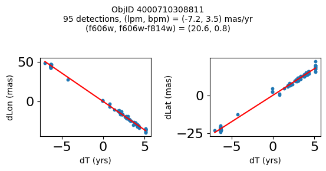
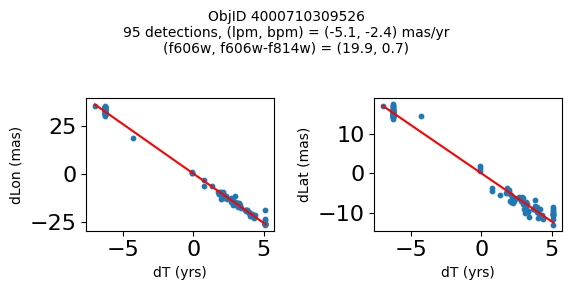
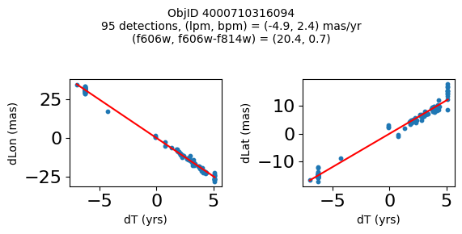
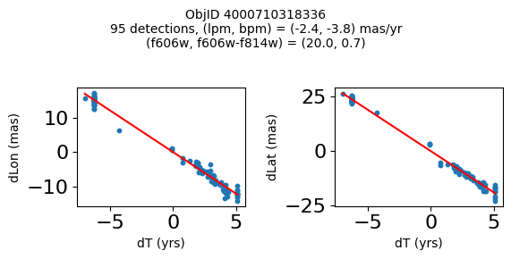
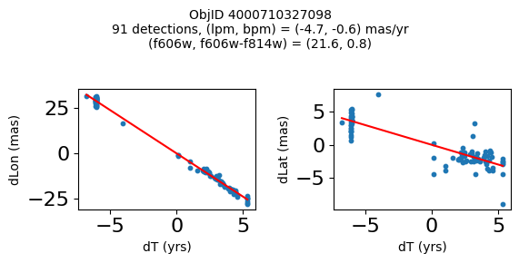
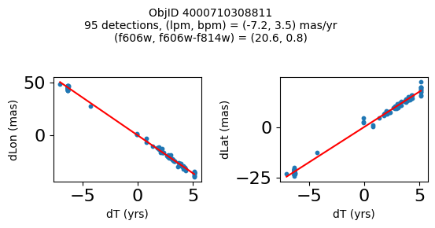
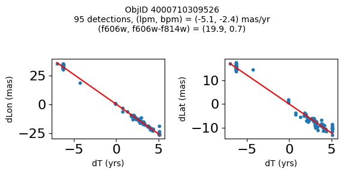
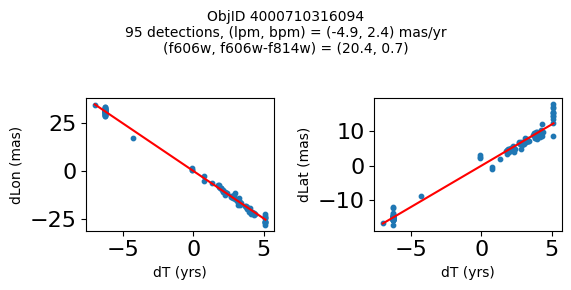
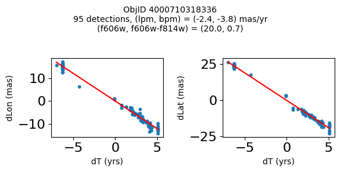
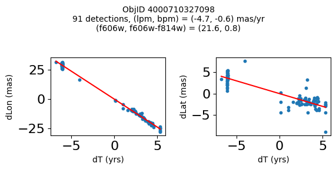

Hubble Source Catalog SWEEPS Proper Motion (CasJobs Version)#
2019 - 2022, Steve Lubow, Rick White, Trenton McKinney#
This notebook shows how to access the new proper motions available for the SWEEPS field in version 3.1 of the Hubble Source Catalog. Data tables in MAST CasJobs are queried from Python using the mastcasjobs module. Additional information is available on the SWEEPS Proper Motions help page.
Instructions:#
Complete the initialization steps described below.
Run the notebook to completion.
Modify and rerun any sections of the Table of Contents below.
Running the notebook from top to bottom takes about 7 minutes (depending on the speed of your computer).
Table of Contents#
Initialization #
Install Python modules#
This notebook requires the use of Python 3.
Modules can be installed with
conda, if using the Anaconda distribution of python, or withpip.If you are using
conda, do not install / update / remove a module withpip, that exists in acondachannel.If a module is not available with
conda, then it’s okay to install it withpip
Install
mastcasjobsandcasjobswithpip:
pip install mastcasjobs
Set up your CasJobs account information#
You must have a MAST Casjobs account. Note that MAST Casjobs accounts are independent of SDSS Casjobs accounts.
For easy startup, you can optionally set the environment variables CASJOBS_USERID and/or CASJOBS_PW with your Casjobs account information. The Casjobs user ID and password are what you enter when logging into Casjobs.
This script prompts for your Casjobs user ID and password during initialization if the environment variables are not defined.
import astropy
import time
import sys
import os
import requests
import numpy as np
import matplotlib.pyplot as plt
import matplotlib.gridspec as gridspec
from matplotlib.colors import LogNorm
from pathlib import Path
# check that version of mastcasjobs is new enough
# we are using some features not in version 0.0.1
from pkg_resources import get_distribution
from packaging.version import Version as V
assert V(get_distribution("mastcasjobs").version) >= V('0.0.2'), """
A newer version of mastcasjobs is required.
Update mastcasjobs to current version using this command:
pip install --upgrade git+git://github.com/rlwastro/mastcasjobs@master
"""
import mastcasjobs
from PIL import Image
from io import BytesIO
## For handling ordinary astropy Tables
from astropy.table import Table
from astropy.io import fits, ascii
from fastkde import fastKDE
from scipy.interpolate import RectBivariateSpline
from astropy.modeling import models, fitting
# There are a number of relatively unimportant warnings that
# show up, so for now, suppress them:
import warnings
warnings.filterwarnings("ignore")
# set width for pprint
astropy.conf.max_width = 150
/tmp/ipykernel_2947/609964975.py:14: UserWarning: pkg_resources is deprecated as an API. See https://setuptools.pypa.io/en/latest/pkg_resources.html. The pkg_resources package is slated for removal as early as 2025-11-30. Refrain from using this package or pin to Setuptools<81.
from pkg_resources import get_distribution
# set universal matplotlib parameters
plt.rcParams.update({'font.size': 16})
HSCContext = "HSCv3"
Set up Casjobs environment.
import getpass
if not os.environ.get('CASJOBS_USERID'):
os.environ['CASJOBS_USERID'] = input('Enter Casjobs UserID:')
if not os.environ.get('CASJOBS_PW'):
os.environ['CASJOBS_PW'] = getpass.getpass('Enter Casjobs password:')
Create table in MyDB with selected SWEEPS objects#
Note that the query restricts the sample to matches with at least 10 detections in each of F606W and F814W. This can be modified depending on the science goals.
This uses an existing MyDB.SWEEPS table if it already exists in your CasJobs account. If you want to change the query, either change the name of the output table or drop the table to force it to be recreated. Usually the query completes in about a minute, but if the database server is heavily loaded then it can take much longer.
DBtable = "SWEEPS"
jobs = mastcasjobs.MastCasJobs(context="MyDB")
try:
print(f"Retrieving table MyDB.{DBtable} (if it exists)")
tab = jobs.fast_table(DBtable, verbose=True)
except ValueError:
print(f"Table MyDB.{DBtable} not found, running query to create it")
# drop table if it already exists
jobs.drop_table_if_exists(DBtable)
# get main information
query = f"""
select a.ObjID, RA=a.raMean, Dec=a.decMean, RAerr=a.raMeanErr, Decerr=a.decMeanErr,
c.NumFilters, c.NumVisits,
a_f606w=i1.MagMed, a_f606w_n=i1.n, a_f606w_mad=i1.MagMAD,
a_f814w=i2.MagMed, a_f814w_n=i2.n, a_f814w_mad=i2.MagMAD,
bpm=a.pmLat, lpm=a.pmLon, bpmerr=a.pmLatErr, lpmerr=a.pmLonErr,
pmdev=sqrt(pmLonDev*pmLonDev+pmLatDev*pmLatDev),
yr=(a.epochMean - 47892)/365.25+1990,
dT=(a.epochEnd-a.epochStart)/365.25,
yrStart=(a.epochStart - 47892)/365.25+1990,
yrEnd=(a.epochEnd - 47892)/365.25+1990
into mydb.{DBtable}
from AstromProperMotions a join AstromSumMagAper2 i1 on
i1.ObjID=a.ObjID and i1.n >=10 and i1.filter ='F606W' and i1.detector='ACS/WFC'
join AstromSumMagAper2 i2 on
i2.ObjID=a.ObjID and i2.n >=10 and i2.filter ='F814W' and i2.detector='ACS/WFC'
join AstromSumPropMagAper2Cat c on a.ObjID=c.ObjID
"""
t0 = time.time()
jobid = jobs.submit(query, task_name="SWEEPS", context=HSCContext)
print("jobid=", jobid)
results = jobs.monitor(jobid)
print(f"Completed in {(time.time()-t0):.1f} sec")
print(results)
# slower version using CasJobs output queue
# tab = jobs.get_table(DBtable, verbose=False)
# fast version using special MAST Casjobs service
tab = jobs.fast_table(DBtable, verbose=True)
Retrieving table MyDB.SWEEPS (if it exists)
10.9 s: Retrieved 157.86MB table MyDB.SWEEPS
17.1 s: Converted to 443932 row table
tab
| ObjID | RA | Dec | RAerr | Decerr | NumFilters | NumVisits | a_f606w | a_f606w_n | a_f606w_mad | a_f814w | a_f814w_n | a_f814w_mad | bpm | lpm | bpmerr | lpmerr | pmdev | yr | dT | yrStart | yrEnd |
|---|---|---|---|---|---|---|---|---|---|---|---|---|---|---|---|---|---|---|---|---|---|
| int64 | float64 | float64 | float64 | float64 | int32 | int32 | float64 | int32 | float64 | float64 | int32 | float64 | float64 | float64 | float64 | float64 | float64 | float64 | float64 | float64 | float64 |
| 4000709002286 | 269.7911379669984 | -29.206156187411423 | 0.6964818624528099 | 0.2730062330800141 | 2 | 47 | 22.127399444580078 | 47 | 0.021600723266601562 | 21.13010025024414 | 47 | 0.0167999267578125 | 2.087558644949346 | -7.738272329430371 | 0.38854582276386007 | 0.22115673368981237 | 2.887154518133692 | 2013.3007902147058 | 11.371914541371764 | 2003.4361796620085 | 2014.8080942033803 |
| 4000709002287 | 269.7955922590832 | -29.206151631494986 | 0.24020216760386343 | 0.18524811391217816 | 2 | 47 | 21.508499145507812 | 47 | 0.029998779296875 | 20.69930076599121 | 47 | 0.023900985717773438 | -2.8930568503344967 | -0.7898583846555245 | 0.1316584790053578 | 0.12462185695877996 | 1.474676632663785 | 2013.3007902147058 | 11.371914541371764 | 2003.4361796620085 | 2014.8080942033803 |
| 4000709002288 | 269.81608933789283 | -29.206155196641195 | 0.3040684131020671 | 0.2850407586200256 | 2 | 47 | 21.654399871826172 | 47 | 0.03650093078613281 | 20.85770034790039 | 47 | 0.017101287841796875 | 4.65866649193795 | -3.2098804580343785 | 0.13931172183651183 | 0.20648097604781626 | 1.9570357322713463 | 2013.3007902147058 | 11.371914541371764 | 2003.4361796620085 | 2014.8080942033803 |
| 4000709002289 | 269.8259694163096 | -29.20615668840751 | 0.3564325426522067 | 0.39542200297333663 | 2 | 47 | 19.79170036315918 | 47 | 0.028200149536132812 | 19.06909942626953 | 47 | 0.019300460815429688 | -0.45662407290928664 | -2.0909050045433832 | 0.15758175952333653 | 0.2763881282194908 | 2.2415238499377685 | 2013.3007902147058 | 11.371914541371764 | 2003.4361796620085 | 2014.8080942033803 |
| 4000709002290 | 269.83486415728754 | -29.206155266983643 | 0.16299639839198538 | 0.14062839407811836 | 2 | 46 | 20.566649436950684 | 46 | 0.015949249267578125 | 19.847750663757324 | 46 | 0.014801025390625 | 4.459275526783969 | -2.0433632344343886 | 0.17899727943855331 | 0.18503594468835396 | 1.0091970907052557 | 2013.5152382701992 | 3.0067822490178155 | 2011.8013119543625 | 2014.8080942033803 |
| 4000709002291 | 269.83512411344606 | -29.2061635244798 | 0.18282583105108072 | 0.2093503650681541 | 2 | 46 | 20.17770004272461 | 46 | 0.028949737548828125 | 19.489749908447266 | 46 | 0.03639984130859375 | 4.090870144734149 | -8.059473158394072 | 0.20446351152189052 | 0.26206212529696193 | 1.293050027027329 | 2013.5152382701992 | 3.0067822490178155 | 2011.8013119543625 | 2014.8080942033803 |
| 4000709002292 | 269.7964913295107 | -29.20618734483311 | 0.30491102397226527 | 0.26784496777851086 | 2 | 47 | 20.83639907836914 | 47 | 0.02239990234375 | 20.088300704956055 | 47 | 0.02230072021484375 | -1.7001866534338244 | -5.963967462759159 | 0.14814161799844547 | 0.1920517681653374 | 1.9671761489287654 | 2013.3007902147058 | 11.371914541371764 | 2003.4361796620085 | 2014.8080942033803 |
| 4000709002293 | 269.7872745304419 | -29.206257828852337 | 1.351885504360048 | 1.0460614189471378 | 2 | 46 | 25.99174976348877 | 46 | 0.0852499008178711 | 24.204350471496582 | 46 | 0.05684947967529297 | -2.290436263458843 | -9.596838559623627 | 0.779373480816473 | 0.6485354032580087 | 8.518045574208871 | 2013.3206150152016 | 11.371914541371764 | 2003.4361796620085 | 2014.8080942033803 |
| 4000709002294 | 269.80888716219647 | -29.206189189626002 | 1.4134596118752103 | 1.2518047802862953 | 2 | 47 | 25.465349197387695 | 46 | 0.08104991912841797 | 23.27630043029785 | 47 | 0.032100677490234375 | 4.381302303073221 | -4.701855876394848 | 0.4784428793001857 | 1.0219363775325352 | 6.469654565147953 | 2013.3007902147058 | 11.371914541371764 | 2003.4361796620085 | 2014.8080942033803 |
| ... | ... | ... | ... | ... | ... | ... | ... | ... | ... | ... | ... | ... | ... | ... | ... | ... | ... | ... | ... | ... | ... |
| 4000946339500 | 269.6899686412092 | -29.27697845186784 | 1.7581744127758168 | 0.9354091074080774 | 2 | 10 | 23.770350456237793 | 10 | 0.06089973449707031 | 22.6496000289917 | 10 | 0.037400245666503906 | -4.433870501660679 | -1.6701167031929542 | 2.2930714454340286 | 1.3766459346536568 | 4.298430412355294 | 2013.9000436508227 | 2.1913492111623043 | 2012.4990161054518 | 2014.6903653166141 |
| 4000946380565 | 269.71004704275265 | -29.258318619418723 | 1.4337273570795164 | 1.471655230308599 | 2 | 11 | 23.99720001220703 | 11 | 0.03730010986328125 | 22.51849937438965 | 11 | 0.020000457763671875 | 1.6111158133637464 | -6.745663286831152 | 1.9631691651841359 | 1.720280363564143 | 4.409524084435339 | 2013.9002540765803 | 2.3094412747548714 | 2012.4990161054518 | 2014.8084573802066 |
| 4000946404892 | 269.67530078168915 | -29.247162734242675 | 1.3763906949106726 | 1.6133894601395353 | 2 | 12 | 24.929399490356445 | 12 | 0.02920055389404297 | 23.21535015106201 | 12 | 0.06190013885498047 | -4.240018447223827 | -5.301395921474695 | 2.3240489286645727 | 2.4646517810785467 | 5.034040969645841 | 2013.3725317320211 | 2.0458630494273624 | 2012.389031376682 | 2014.4348944261094 |
| 4000946417296 | 269.7016328152704 | -29.246070466593743 | 3.130830982636958 | 3.185144112877607 | 2 | 11 | 25.600500106811523 | 11 | 0.23419952392578125 | 24.028099060058594 | 11 | 0.2503986358642578 | 0.3265864932598421 | -6.491394647992156 | 6.396715459697641 | 2.5782652825923047 | 8.829447098663028 | 2013.7731122440448 | 2.01948620036275 | 2012.6708791162512 | 2014.6903653166141 |
| 4000949430259 | 269.722986295747 | -29.21197112017265 | 1.361963963773738 | 1.158905612896655 | 3 | 15 | 24.502249717712402 | 14 | 0.06614971160888672 | 23.928850173950195 | 14 | 0.056850433349609375 | 4.745787093281551 | -3.4149224348359475 | 0.9875243981622149 | 0.6006686739150457 | 5.081087460494774 | 2004.567449081762 | 6.212572361916957 | 2004.14378291216 | 2010.356355274077 |
| 4000949692413 | 269.847657491686 | -29.213464437142868 | 2.3678034671958668 | 2.0224597819540673 | 2 | 10 | 24.422550201416016 | 10 | 0.11170005798339844 | 22.581549644470215 | 10 | 0.0209503173828125 | 1.6834992526734194 | -14.490467506156065 | 3.4740642144508795 | 4.492656398011582 | 5.946113188318635 | 2013.955340339603 | 1.5098539308761485 | 2013.2982402725042 | 2014.8080942033803 |
| 4000949719295 | 269.8230388680129 | -29.20072120181885 | 6.9256239011552925 | 2.49884610751816 | 2 | 10 | 25.977850914001465 | 10 | 0.10779953002929688 | 24.156999588012695 | 10 | 0.03194999694824219 | -0.009307948981069264 | -9.255580848582802 | 1.8581178329802082 | 1.5241924426465314 | 15.473545552827103 | 2012.4700600740625 | 10.768784408135662 | 2003.4361796620085 | 2014.2049640701443 |
| 4000979902333 | 269.804403240861 | -29.192813265455396 | 2.3859956776447127 | 1.392848515948042 | 2 | 10 | 25.71024990081787 | 10 | 0.06535053253173828 | 24.112099647521973 | 10 | 0.05470085144042969 | 0.7550276872362829 | -4.7745907025067345 | 3.6257686130953477 | 1.461781567688497 | 5.065034698466592 | 2013.6589915119716 | 2.5308665509739208 | 2012.2040284838704 | 2014.7348950348442 |
| 4000979908546 | 269.8156665822647 | -29.189854516331526 | 0.9143748593616481 | 2.1238192007085037 | 2 | 12 | 25.4466495513916 | 12 | 0.15910053253173828 | 23.336549758911133 | 12 | 0.06319999694824219 | -7.2055855532918205 | -9.683292833608878 | 2.618264686941967 | 3.0724808097663883 | 5.246267309545055 | 2013.8340336110703 | 1.6017431136587867 | 2013.2063510897215 | 2014.8080942033803 |
| 4000980227788 | 269.7998513044728 | -29.19707771926519 | 1.8494859814888565 | 1.5991491655370784 | 2 | 12 | 24.400450706481934 | 12 | 0.10389995574951172 | 22.93809986114502 | 12 | 0.02064990997314453 | 0.15278595605010709 | -7.172152518535961 | 0.691934557090257 | 0.49373163797911374 | 5.7619744099400085 | 2012.6568721424214 | 11.371914541371764 | 2003.4361796620085 | 2014.8080942033803 |
Properties of Full Catalog #
Sky Coverage #
fig, ax = plt.subplots(figsize=(12, 10))
ax.scatter('RA', 'Dec', data=tab, s=1, alpha=0.1)
ax.set(xlabel='RA', ylabel='Dec', title=f'{len(tab)} stars in SWEEPS')
ax.invert_xaxis()
Proper Motion Histograms #
Proper motion histograms for lon and lat#
bin = 0.2
hrange = (-20, 20)
bincount = int((hrange[1]-hrange[0])/bin + 0.5) + 1
fig, ax = plt.subplots(figsize=(12, 10))
for col, label in zip(['lpm', 'bpm'], ['Longitude', 'Latitude']):
ax.hist(col, data=tab, range=hrange, bins=bincount, label=label, histtype='step', linewidth=2)
ax.set(xlabel='Proper motion [mas/yr]', ylabel=f'Number [in {bin:.2} mas bins]', title=f'{len(tab):,} stars in SWEEPS')
_ = ax.legend()
Proper motion error cumulative histogram for lon and lat#
bin = 0.01
hrange = (0, 2)
bincount = int((hrange[1]-hrange[0])/bin + 0.5) + 1
fig, ax = plt.subplots(figsize=(12, 10))
for col, label in zip(['lpmerr', 'bpmerr'], ['Longitude Error', 'Latitude Error']):
ax.hist(col, data=tab, range=hrange, bins=bincount, label=label, histtype='step', cumulative=1, linewidth=2)
ax.set(xlabel='Proper motion error [mas/yr]', ylabel=f'Cumulative number [in {bin:0.2} mas bins]', title=f'{len(tab):,} stars in SWEEPS')
_ = ax.legend(loc='upper left')
Proper motion error log histogram for lon and lat#
bin = 0.01
hrange = (0, 6)
bincount = int((hrange[1]-hrange[0])/bin + 0.5) + 1
fig, ax = plt.subplots(figsize=(12, 10))
for col, label in zip(['lpmerr', 'bpmerr'], ['Longitude Error', 'Latitude Error']):
ax.hist(col, data=tab, range=hrange, bins=bincount, label=label, histtype='step', linewidth=2)
ax.set(xlabel='Proper motion error [mas/yr]', ylabel=f'Number [in {bin:0.2} mas bins]', title=f'{len(tab):,} stars in SWEEPS', yscale='log')
_ = ax.legend(loc='upper right')
Proper motion error as a function of dT#
Exclude objects with dT near zero, and to improve the plotting add a bit of random noise to spread out the quanitized time values.
# restrict to sources with dT > 1 year
dtmin = 1.0
w = np.where(tab['dT'] > dtmin)[0]
if ('rw' not in locals()) or len(rw) != len(w):
rw = np.random.random(len(w))
x = np.array(tab['dT'][w]) + 0.5*(rw-0.5)
y = np.log(np.array(tab['lpmerr'][w]))
# Calculate the point density
t0 = time.time()
myPDF, axes = fastKDE.pdf(x.flatten(), y.flatten(), numPoints=2**9+1)
print("kde took {:.1f} sec".format(time.time()-t0))
# interpolate to get z values at points
finterp = RectBivariateSpline(axes[1], axes[0], myPDF)
z = finterp(y, x, grid=False)
# Sort the points by density, so that the densest points are plotted last
idx = z.argsort()
xs, ys, zs = x[idx], y[idx], z[idx]
# select a random subset of points in the most crowded regions to speed up plotting
wran = np.where(np.random.random(len(zs))*zs < 0.05)[0]
print("Plotting {} of {} points".format(len(wran), len(zs)))
xs = xs[wran]
ys = ys[wran]
zs = zs[wran]
kde took 1.6 sec
Plotting 178120 of 442682 points
fig, ax = plt.subplots(figsize=(12, 10))
sc = ax.scatter(xs, np.exp(ys), c=zs, s=2, edgecolors='none', cmap='plasma')
ax.set(xlabel='Date range [yr]', ylabel='Proper motion error [mas/yr]',
title=f'{len(tab):,} stars in SWEEPS\nLongitude PM error', yscale='log')
_ = fig.colorbar(sc, ax=ax)
Proper motion error log histogram for lon and lat#
Divide sample into points with \(<6\) years of data and points with more than 6 years of data.
bin = 0.01
hrange = (0, 6)
bincount = int((hrange[1]-hrange[0])/bin + 0.5) + 1
tsplit = 6
dmaglim = 0.05
wmag = np.where((tab['a_f606w_mad'] < dmaglim) & (tab['a_f814w_mad'] < dmaglim))[0]
w1 = wmag[tab['dT'][wmag] <= tsplit]
w2 = wmag[tab['dT'][wmag] > tsplit]
fig, (ax1, ax2) = plt.subplots(nrows=2, ncols=1, figsize=(12, 12), sharey=True, tight_layout=True)
for ax, w in zip([ax1, ax2], [w1, w2]):
for col, label in zip(['lpmerr', 'bpmerr'], ['Longitude Error', 'Latitude Error']):
data = tab[w]
ax.hist(col, data=data, range=hrange, bins=bincount, label=label, histtype='step', linewidth=2)
ax1.set(xlabel='Proper motion error [mas/yr]', ylabel=f'Number [in {bin:0.2} mas bins]',
title=f'{len(w1):,} stars in SWEEPS with dT < {tsplit} yrs, dmag < {dmaglim}', yscale='log')
ax2.set(xlabel='Proper motion error [mas/yr]', ylabel=f'Number [in {bin:0.2} mas bins]',
title=f'{len(w2):,} stars in SWEEPS with dT > {tsplit} yrs, dmag < {dmaglim}', yscale='log')
ax1.legend()
ax2.legend()
<matplotlib.legend.Legend at 0x7fa143cf1410>
Number of Visits Histogram #
bin = 1
hrange = (0, 130)
bincount = int((hrange[1]-hrange[0])/bin + 0.5) + 1
fig, ax = plt.subplots(figsize=(12, 10))
ax.hist('NumVisits', data=tab, range=hrange, bins=bincount, label='Number of visits ', histtype='step', linewidth=2)
ax.set(xlabel='Number of visits', ylabel='Number of objects', title=f'{len(tab):,} stars in SWEEPS')
_ = ax.margins(x=0)
Time Histograms #
First plot histogram of observation dates.
bin = 1
hrange = (2000, 2020)
bincount = int((hrange[1]-hrange[0])/bin + 0.5) + 1
fig, ax = plt.subplots(figsize=(12, 10))
ax.hist('yr', data=tab, range=hrange, bins=bincount, label='year ', histtype='step', linewidth=2)
ax.set(xlabel='mean detection epoch (year)', ylabel='Number of objects', title=f'{len(tab):,} stars in SWEEPS')
ax.set_xticks(ticks=range(2000, 2021, 2))
_ = ax.margins(x=0)
Then plot histogram of observation duration for the objects.
bin = 0.25
hrange = (0, 15)
bincount = int((hrange[1]-hrange[0])/bin + 0.5) + 1
fig, ax = plt.subplots(figsize=(12, 10))
ax.hist('dT', data=tab, range=hrange, bins=bincount, label='year ', histtype='step', linewidth=2)
_ = ax.set(xlabel='time span (years)', ylabel='Number of objects', title=f'{len(tab):,} stars in SWEEPS', yscale='log')
Magnitude Histograms #
Aper2 magnitude histograms for F606W and F814W#
bin = 0.025
hrange = (16, 28)
bincount = int((hrange[1]-hrange[0])/bin + 0.5) + 1
fig, ax = plt.subplots(figsize=(12, 10))
for col, label in zip(['a_f606w', 'a_f814w'], ['F606W', 'F814W']):
ax.hist(col, data=tab, range=hrange, bins=bincount, label=label, histtype='step', linewidth=2)
ax.set(xlabel='magnitude', ylabel=f'Number [in {bin:0.2} mas bins]', title=f'{len(tab):,} stars in SWEEPS')
_ = ax.legend(loc='upper right')
Aper2 magnitude error histograms for F606W and F814W#
bin = 0.001
hrange = (0, 0.2)
bincount = int((hrange[1]-hrange[0])/bin + 0.5) + 1
fig, ax = plt.subplots(figsize=(12, 10))
for col, label in zip(['a_f606w_mad', 'a_f814w_mad'], ['F606W', 'F814W']):
ax.hist(col, data=tab, range=hrange, bins=bincount, label=label, histtype='step', linewidth=2)
ax.set(xlabel='magnitude error (median absolute deviation)', ylabel=f'Number of stars[in {bin:0.2} magnitude bins]',
title=f'{len(tab):,} stars in SWEEPS')
_ = ax.legend(loc='upper right')
Color-Magnitude Diagram #
Color-magnitude diagram#
Plot the color-magnitude diagram for the ~440k points retrieved from the database. This uses fastkde to compute the kernel density estimate for the crowded plot, which is very fast. See https://pypi.org/project/fastkde/ for instructions – or just do
pip install fastkde
f606w = tab['a_f606w']
f814w = tab['a_f814w']
RminusI = f606w-f814w
# Calculate the point density
w = np.where((RminusI > -1) & (RminusI < 4))[0]
x = np.array(RminusI[w])
y = np.array(f606w[w])
t0 = time.time()
myPDF, axes = fastKDE.pdf(x, y, numPoints=2**10+1)
print("kde took {:.1f} sec".format(time.time()-t0))
# interpolate to get z values at points
finterp = RectBivariateSpline(axes[1], axes[0], myPDF)
z = finterp(y, x, grid=False)
# Sort the points by density, so that the densest points are plotted last
idx = z.argsort()
xs, ys, zs = x[idx], y[idx], z[idx]
# select a random subset of points in the most crowded regions to speed up plotting
wran = np.where(np.random.random(len(zs))*zs < 0.05)[0]
print(f"Plotting {len(wran)} of {len(zs)} points")
xs = xs[wran]
ys = ys[wran]
zs = zs[wran]
kde took 1.8 sec
Plotting 147608 of 443502 points
fig, ax = plt.subplots(figsize=(12, 10))
sc = ax.scatter(xs, ys, c=zs, s=2, edgecolors='none', cmap='plasma')
ax.set(xlabel='A_F606W - A_F814W', ylabel='A_F606W', title=f'{len(x):,} stars in SWEEPS')
ax.invert_yaxis()
fig.colorbar(sc, ax=ax)
<matplotlib.colorbar.Colorbar at 0x7fa16cd03650>
Detection Positions #
Define a function to plot the PM fit for an object.
# define function
def positions(Obj, jobs=None):
"""
input parameter Obj is the value of the ObjID
optional jobs parameter re-uses casjobs jobs variable
output plots change in (lon, lat) as a function of time
overplots proper motion fit
provides number of objects and magnitude/color information
"""
if not jobs:
jobs = mastcasjobs.MastCasJobs(context=HSCContext)
# execute these as "system" queries so they don't fill up your Casjobs history
# get the measured positions as a function of time
query = f"""SELECT dT, dLon, dLat
from AstromSourcePositions where ObjID={Obj}
order by dT
"""
pos = jobs.quick(query, context=HSCContext, task_name="SWEEPS/Microlensing", astropy=True, system=True)
# get the PM fit parameters
query = f"""SELECT pmlon, pmlonerr, pmlat, pmlaterr
from AstromProperMotions where ObjID={Obj}
"""
pm = jobs.quick(query, context=HSCContext, task_name="SWEEPS/Microlensing", astropy=True, system=True)
lpm = pm['pmlon'][0]
bpm = pm['pmlat'][0]
# get the intercept for the proper motion fit referenced to the start time
# time between mean epoch and zero (ref) epoch (years)
# get median magnitudes and colors for labeling
query = f"""SELECT a_f606w=i1.MagMed, a_f606_m_f814w=i1.MagMed-i2.MagMed
from AstromSumMagAper2 i1
join AstromSumMagAper2 i2 on i1.ObjID=i2.ObjID
where i1.ObjID={Obj} and i1.filter='f606w' and i2.filter='f814w'
"""
phot = jobs.quick(query, context=HSCContext, task_name="SWEEPS/Microlensing", astropy=True, system=True)
f606w = phot['a_f606w'][0]
f606wmf814w = phot['a_f606_m_f814w'][0]
x = pos['dT']
# xpm = np.linspace(0, max(x), 10)
xpm = np.array([x.min(), x.max()])
y1 = pos['dLon']
ypm1 = lpm*xpm
y2 = pos['dLat']
ypm2 = bpm*xpm
# plot figure
fig, (ax1, ax2) = plt.subplots(nrows=1, ncols=2, figsize=(6, 3), tight_layout=True)
ax1.scatter(x, y1, s=10)
ax1.plot(xpm, ypm1, '-r')
ax2.scatter(x, y2, s=10)
ax2.plot(xpm, ypm2, '-r')
ax1.set_xlabel('dT (yrs)', fontsize=10)
ax1.set_ylabel('dLon (mas)', fontsize=10)
ax2.set_xlabel('dT (yrs)', fontsize=10)
ax2.set_ylabel('dLat (mas)', fontsize=10)
fig.suptitle(f"ObjID {Obj}"
f"\n{len(x)} detections, (lpm, bpm) = ({lpm:.1f}, {bpm:.1f}) mas/yr"
f"\n(f606w, f606w-f814w) = ({f606w:.1f}, {f606wmf814w:.1f})", size=10)
plt.show()
plt.close()
Plot positions of objects that are detected in more than 90 visits with a median absolute deviation from the fit of less than 1.5 mas and proper motion error less than 1.0 mas/yr.
n = tab['NumVisits']
dev = tab['pmdev']
objid = tab['ObjID']
lpmerr0 = np.array(tab['lpmerr'])
bpmerr0 = np.array(tab['bpmerr'])
wi = np.where((dev < 1.5) & (n > 90) & (np.sqrt(bpmerr0**2+lpmerr0**2) < 1.0))[0]
print(f"Plotting {len(wi)} objects")
for o in objid[wi]:
positions(o, jobs=jobs)
Plotting 21 objects

 









Good Photometric Objects #
Look at photometric error distribution to pick out good photometry objects as a function of magnitude #
The photometric error is mainly a function of magnitude. We make a cut slightly above the typical error to exclude objects that have poor photometry. (In the SWEEPS field, that most often is the result of blending and crowding.)
f606w = tab['a_f606w']
f814w = tab['a_f814w']
RminusI = f606w-f814w
w = np.where((RminusI > -1) & (RminusI < 4))[0]
f606w_mad = tab['a_f606w_mad']
f814w_mad = tab['a_f814w_mad']
t0 = time.time()
# Calculate the point density
x1 = np.array(f606w[w])
y1 = np.array(f606w_mad[w])
y1log = np.log(y1)
myPDF1, axes1 = fastKDE.pdf(x1, y1log, numPoints=2**10+1)
finterp = RectBivariateSpline(axes1[1], axes1[0], myPDF1)
z1 = finterp(y1log, x1, grid=False)
# Sort the points by density, so that the densest points are plotted last
idx = z1.argsort()
xs1, ys1, zs1 = x1[idx], y1[idx], z1[idx]
# select a random subset of points in the most crowded regions to speed up plotting
wran = np.where(np.random.random(len(zs1))*zs1 < 0.05)[0]
print(f"Plotting {len(wran)} of {len(zs1)} points")
xs1 = xs1[wran]
ys1 = ys1[wran]
zs1 = zs1[wran]
x2 = np.array(f814w[w])
y2 = np.array(f814w_mad[w])
y2log = np.log(y2)
myPDF2, axes2 = fastKDE.pdf(x2, y2log, numPoints=2**10+1)
finterp = RectBivariateSpline(axes2[1], axes2[0], myPDF2)
z2 = finterp(y2log, x2, grid=False)
idx = z2.argsort()
xs2, ys2, zs2 = x2[idx], y2[idx], z2[idx]
print(f"{(time.time()-t0):.1f} s: completed kde")
# select a random subset of points in the most crowded regions to speed up plotting
wran = np.where(np.random.random(len(zs2))*zs2 < 0.05)[0]
print(f"Plotting {len(wran)} of {len(zs2)} points")
xs2 = xs2[wran]
ys2 = ys2[wran]
zs2 = zs2[wran]
xr = (18, 27)
xx = np.arange(501)*(xr[1]-xr[0])/500.0 + xr[0]
xcut1 = 24.2
xnorm1 = 0.03
xcut2 = 23.0
xnorm2 = 0.03
# only plot a subset of the points to speed things up
qsel = 3
xs1 = xs1[::qsel]
ys1 = ys1[::qsel]
zs1 = zs1[::qsel]
xs2 = xs2[::qsel]
ys2 = ys2[::qsel]
zs2 = zs2[::qsel]
Plotting 274472 of 443502 points
4.5 s: completed kde
Plotting 250880 of 443502 points
fig, (ax1, ax2) = plt.subplots(nrows=1, ncols=2, figsize=(15, 8), tight_layout=True)
ax1.scatter(xs1, ys1, c=zs1, s=2, edgecolors='none', cmap='plasma')
ax1.plot(xx, xnorm1 * (1. + 10.**(0.4*(xx-xcut1))), linewidth=2.0,
label=f'${xnorm1:.2f} (1+10^{{0.4(M-{xcut1:.1f})}})$')
ax2.scatter(xs2, ys2, c=zs2, s=2, edgecolors='none', cmap='plasma')
ax2.plot(xx, xnorm2 * (1. + 10.**(0.4*(xx-xcut2))), linewidth=2.0,
label=f'${xnorm2:.2f} (1+10^{{0.4(M-{xcut2:.1f})}})$')
ax1.legend(loc='upper left')
ax2.legend(loc='upper left')
ax1.set(xlabel='F606W', ylabel='F606W_MAD', yscale='log')
ax2.set(xlabel='F814W', ylabel='F814W_MAD', yscale='log')
[Text(0.5, 0, 'F814W'), Text(0, 0.5, 'F814W_MAD'), None]
Define function to apply noise cut and plot color-magnitude diagram with cut#
Note that we reduce the R-I range to 0-3 here because there are very few objects left bluer than R-I = 0 or redder than R-I = 3.
def noisecut(tab, factor=1.0):
"""Return boolean array with noise cut in f606w and f814w using model
factor is normalization factor to use (>1 means allow more noise)
"""
f606w = tab['a_f606w']
f814w = tab['a_f814w']
f606w_mad = tab['a_f606w_mad']
f814w_mad = tab['a_f814w_mad']
# noise model computed above
xcut_f606w = 24.2
xnorm_f606w = 0.03 * factor
xcut_f814w = 23.0
xnorm_f814w = 0.03 * factor
return ((f606w_mad < xnorm_f606w*(1+10.0**(0.4*(f606w-xcut_f606w))))
& (f814w_mad < xnorm_f814w*(1+10.0**(0.4*(f814w-xcut_f814w)))))
# low-noise objects
good = noisecut(tab, factor=1.0)
# Calculate the point density
w = np.where((RminusI > 0) & (RminusI < 3) & good)[0]
x = np.array(RminusI[w])
y = np.array(f606w[w])
t0 = time.time()
myPDF, axes = fastKDE.pdf(x, y, numPoints=2**10+1)
print(f"kde took {(time.time()-t0):.1f} sec")
# interpolate to get z values at points
finterp = RectBivariateSpline(axes[1], axes[0], myPDF)
z = finterp(y, x, grid=False)
# Sort the points by density, so that the densest points are plotted last
idx = z.argsort()
xs, ys, zs = x[idx], y[idx], z[idx]
# select a random subset of points in the most crowded regions to speed up plotting
wran = np.where(np.random.random(len(zs))*zs < 0.075)[0]
print(f"Plotting {len(wran)} of {len(zs)} points")
xs = xs[wran]
ys = ys[wran]
zs = zs[wran]
kde took 1.6 sec
Plotting 130171 of 333525 points
fig, ax = plt.subplots(figsize=(12, 10))
sc = ax.scatter(xs, ys, c=zs, s=2, edgecolors='none', cmap='plasma')
ax.set(xlabel='A_F606W - A_F814W', ylabel='A_F606W',
title=f'{len(x):,} stars in SWEEPS', xlim=(-1, 4), ylim=(27.5, 17.5))
_ = fig.colorbar(sc, ax=ax)
Science Applications #
Proper Motions of Good Objects #
Average proper motion in color-magnitude bins#
# good defined above
f606w = tab['a_f606w']
f814w = tab['a_f814w']
RminusI = f606w-f814w
w = np.where((RminusI > 0) & (RminusI < 3) & good)[0]
lpm = np.array(tab['lpm'][w])
bpm = np.array(tab['bpm'][w])
x = np.array(RminusI[w])
y = np.array(f606w[w])
nbins = 50
count2d, yedge, xedge = np.histogram2d(y, x, bins=nbins)
lpm_sum = np.histogram2d(y, x, bins=nbins, weights=lpm-lpm.mean())[0]
bpm_sum = np.histogram2d(y, x, bins=nbins, weights=bpm-bpm.mean())[0]
lpm_sumsq = np.histogram2d(y, x, bins=nbins, weights=(lpm-lpm.mean())**2)[0]
bpm_sumsq = np.histogram2d(y, x, bins=nbins, weights=(bpm-bpm.mean())**2)[0]
ccount = count2d.clip(1)
lpm_mean = lpm_sum/ccount
bpm_mean = bpm_sum/ccount
lpm_rms = np.sqrt(lpm_sumsq/ccount-lpm_mean**2)
bpm_rms = np.sqrt(bpm_sumsq/ccount-bpm_mean**2)
lpm_msigma = lpm_rms/np.sqrt(ccount)
bpm_msigma = bpm_rms/np.sqrt(ccount)
ww = np.where(count2d > 100)
yy, xx = np.mgrid[:nbins, :nbins]
xx = (0.5*(xedge[1:]+xedge[:-1]))[xx]
yy = (0.5*(yedge[1:]+yedge[:-1]))[yy]
fig, ax = plt.subplots(figsize=(12, 10))
Q = ax.quiver(xx[ww], yy[ww], lpm_mean[ww], bpm_mean[ww], color='red', width=0.0015)
qlength = 5
ax.quiverkey(Q, 0.8, 0.97, qlength, f'{qlength} mas/yr', coordinates='axes', labelpos='W')
ax.invert_yaxis()
_ = ax.set(xlabel='A_F606W - A_F814W', ylabel='A_F606W',
xlim=(xedge[0], xedge[-1]), ylim=(yedge[-1], yedge[0]))
RMS in longitude PM as a function of color/magnitude#
Mean longitude PM as image#
fig, (ax1, ax2, ax3) = plt.subplots(nrows=1, ncols=3, figsize=(20, 6), tight_layout=True, sharey=True)
# plot ax1
p1 = ax1.scatter(xs, ys, c=zs, s=2, edgecolors='none', cmap='plasma')
ax1.set(xlabel='A_F606W - A_F814W', ylabel='A_F606W',
title=f'Color-magnitude\n{len(x):,} stars in SWEEPS')
ax1.set(xlim=(xedge[0], xedge[-1]), ylim=(yedge[0], yedge[-1]))
ax1.invert_yaxis()
fig.colorbar(p1, ax=ax1)
# plot ax2
mask = (lpm_msigma <= 1.0) & (count2d > 10)
im2 = (lpm_mean+lpm.mean())*mask
im2[~mask] = np.nan
vmax = np.nanmax(np.abs(im2))
p2 = ax2.imshow(im2, cmap='RdYlGn', aspect="auto", origin="lower",
extent=(xedge[0], xedge[-1], yedge[0], yedge[-1]))
ax2.set(xlabel='A_F606W - A_F814W',
title='Mean Longitude PM\n$\\sigma(\\mathrm{PM}) \\leq 1$ and $N > 10$')
ax2.set(xlim=(xedge[0], xedge[-1]), ylim=(yedge[0], yedge[-1]))
ax2.invert_yaxis()
cb2 = fig.colorbar(p2, ax=ax2)
cb2.ax.set_ylabel('mas/yr', rotation=270, labelpad=15)
# plat ax3
im3 = lpm_rms*(count2d > 10)
p3 = ax3.imshow(im3, cmap='magma', aspect="auto", origin="lower",
extent=(xedge[0], xedge[-1], yedge[0], yedge[-1]),
norm=LogNorm(vmin=im3[im3 > 0].min(), vmax=im3.max()))
ax3.set(xlabel='A_F606W - A_F814W',
title='RMS in Longitude PM\nN > 10')
ax3.set(xlim=(xedge[0], xedge[-1]), ylim=(yedge[0], yedge[-1]))
ax3.invert_yaxis()
cb3 = fig.colorbar(p3, ax=ax3)
_ = cb3.ax.set_ylabel('mas/yr', rotation=270)
Mean latitude PM as image#
fig, (ax1, ax2, ax3) = plt.subplots(nrows=1, ncols=3, figsize=(20, 6), tight_layout=True, sharey=True)
# plot ax1
p1 = ax1.scatter(xs, ys, c=zs, s=2, edgecolors='none', cmap='plasma')
ax1.set(xlabel='A_F606W - A_F814W', ylabel='A_F606W',
title=f'Color-magnitude\n{len(x):,} stars in SWEEPS')
ax1.set(xlim=(xedge[0], xedge[-1]), ylim=(yedge[0], yedge[-1]))
ax1.invert_yaxis()
fig.colorbar(p1, ax=ax1)
# plot ax2
mask = (bpm_msigma <= 1.0) & (count2d > 10)
im2 = (bpm_mean+bpm.mean())*mask
im2[~mask] = np.nan
vmax = np.nanmax(np.abs(im2))
p2 = ax2.imshow(im2, cmap='RdYlGn', aspect="auto", origin="lower",
extent=(xedge[0], xedge[-1], yedge[0], yedge[-1]))
ax2.set(xlabel='A_F606W - A_F814W',
title='Mean Latitude PM\n$\\sigma(\\mathrm{PM}) \\leq 1$ and $N > 10$')
ax2.set(xlim=(xedge[0], xedge[-1]), ylim=(yedge[0], yedge[-1]))
ax2.invert_yaxis()
cb2 = fig.colorbar(p2, ax=ax2)
cb2.ax.set_ylabel('mas/yr', rotation=270, labelpad=15)
# plot ax3
im3 = bpm_rms*(count2d > 10)
p3 = ax3.imshow(im3, cmap='magma', aspect="auto", origin="lower",
extent=(xedge[0], xedge[-1], yedge[0], yedge[-1]),
norm=LogNorm(vmin=im3[im3 > 0].min(), vmax=im3.max()))
ax3.set(xlabel='A_F606W - A_F814W',
title='RMS in Latitude PM\nN > 10')
ax3.set(xlim=(xedge[0], xedge[-1]), ylim=(yedge[0], yedge[-1]))
ax3.invert_yaxis()
cb3 = fig.colorbar(p3, ax=ax3)
_ = cb3.ax.set_ylabel('mas/yr', rotation=270)
Proper Motions in Bulge and Disk #
Fit a smooth function to the main ridgeline of color-magnitude diagram#
Fit the R-I vs R values, but force the function to increase montonically with R. We use a log transform of the y coordinate to help.
# locate ridge line
iridgex = np.argmax(myPDF, axis=1)
pdfx = myPDF[np.arange(len(iridgex), dtype=int), iridgex]
# pdfx = myPDF.max(axis=1)
wx = np.where(pdfx > 0.1)[0]
iridgex = iridgex[wx]
# use weighted sum of 2*hw+1 points around peak
hw = 10
pridgex = 0.0
pdenom = 0.0
for k in range(-hw, hw+1):
wt = myPDF[wx, iridgex+k]
pridgex = pridgex + k*wt
pdenom = pdenom + wt
pridgex = iridgex + pridgex/pdenom
ridgex = np.interp(pridgex, np.arange(len(axes[0])), axes[0])
# Fit the data using a polynomial model
x0 = axes[1][wx].min()
x1 = axes[1][wx].max()
p_init = models.Polynomial1D(9)
fit_p = fitting.LinearLSQFitter()
xx = (axes[1][wx]-x0)/(x1-x0)
yoff = 0.65
yy = np.log(ridgex - yoff)
p = fit_p(p_init, xx, yy)
# define useful functions for the ridge line
def ridge_color(f606w, function=p, yoff=yoff, x0=x0, x1=x1):
"""Return R-I position of ridge line as a function of f606w magnitude
function, yoff, x0, x1 are from polynomial fit above
"""
return yoff + np.exp(p((f606w-x0)/(x1-x0)))
# calculate grid of function values for approximate inversion
rxgrid = axes[1][wx]
rygrid = ridge_color(rxgrid)
color_domain = [rygrid[0], rygrid[-1]]
mag_domain = [axes[1][wx[0]], axes[1][wx[-1]]]
print(f"color_domain {color_domain}")
print(f"mag_domain {mag_domain}")
def ridge_mag(RminusI, xgrid=rxgrid, ygrid=rygrid):
"""Return f606w position of ridge line as a function of R-I color
Uses simple linear interpolation to get approximate value
"""
f606w = np.interp(RminusI, ygrid, xgrid)
f606w[(RminusI < ygrid[0]) | (RminusI > ygrid[-1])] = np.nan
return f606w
color_domain [0.6883374859498668, 2.156051675824816]
mag_domain [19.356585323810577, 26.480549454689026]
Plot the results to check that they look reasonable.
ridgexf = yoff + np.exp(p(xx))
fig, (ax1, ax2) = plt.subplots(nrows=1, ncols=2, figsize=(12, 6), tight_layout=True)
ax1.plot(axes[1][wx], ridgex, 'bo')
ax1.plot(axes[1][wx], ridgexf, color='red')
ax1.set(xlabel='R', ylabel='R-I')
# check the derivative plot to see if it stays positive
deriv = (np.exp(p(xx)) *
models.Polynomial1D.horner(xx, (p.parameters * np.arange(len(p.parameters)))[1:]))
ax2.semilogy(axes[1][wx], np.exp(p(xx)) *
models.Polynomial1D.horner(xx, (p.parameters * np.arange(len(p.parameters)))[1:]), color='red')
_ = ax2.set(xlabel='R', ylabel='Fit derivative', title=f'Min deriv {deriv.min():.6f}')
Plot the ridgeline on the CMD#
fig, ax = plt.subplots(figsize=(12, 10))
sc = ax.scatter(xs, ys, c=zs, s=2, edgecolors='none', cmap='plasma')
# overplot ridge line
ax.plot(ridge_color(axes[1][wx]), axes[1][wx], color='red')
ax.plot(axes[0], ridge_mag(axes[0]), color='green')
ax.set(xlabel='A_F606W - A_F814W', ylabel='A_F606W',
title=f'Color-magnitude\n{len(x):,} stars in SWEEPS',
xlim=(xedge[0], xedge[-1]), ylim=(yedge[0], yedge[-1]))
ax.invert_yaxis()
_ = fig.colorbar(sc, ax=ax)
Binned distribution of PM(Long) vs magnitude offset from ridge line#
yloc = ridge_mag(x)
x1 = x[np.isfinite(yloc)]
wy = np.where((axes[0] >= x1.min()) & (axes[0] <= x1.max()))[0]
ridgey = ridge_mag(axes[0][wy])
# Weighted histogram
dmagmin = -2.0
dmagmax = 1.0
xmax = axes[0][wy[-1]]
# xmin = axes[0][wy[0]]
xmin = 1.0
wsel = np.where((y-yloc >= dmagmin) & (y-yloc <= dmagmax) & (x >= xmin) & (x <= xmax))[0]
x2 = y[wsel]-yloc[wsel]
y2 = lpm[wsel]-lpm.mean()
hrange = (dmagmin, dmagmax)
hbins = 50
count1d, xedge1d = np.histogram(x2, range=hrange, bins=hbins)
lpm_sum1d = np.histogram(x2, range=hrange, bins=hbins, weights=y2)[0]
lpm_sumsq1d = np.histogram(x2, range=hrange, bins=hbins, weights=y2**2)[0]
ccount1d = count1d.clip(1)
lpm_mean1d = lpm_sum1d/ccount1d
lpm_rms1d = np.sqrt(lpm_sumsq1d/ccount1d-lpm_mean1d**2)
lpm_msigma1d = lpm_rms1d/np.sqrt(ccount1d)
lpm_mean1d += lpm.mean()
x1d = 0.5*(xedge1d[1:]+xedge1d[:-1])
xboundary = np.hstack((axes[0][wy], axes[0][wy[::-1]]))
yboundary = np.hstack((ridgey+dmagmax, ridgey[::-1]+dmagmin))
wb = np.where((xboundary >= xmin) & (xboundary <= xmax))
xboundary = xboundary[wb]
yboundary = yboundary[wb]
print(xboundary[0], yboundary[0], xboundary[-1], yboundary[-1])
print(xboundary.shape, yboundary.shape)
xboundary = np.append(xboundary, xboundary[0])
yboundary = np.append(yboundary, yboundary[0])
# don't plot huge error points
wp = np.where(lpm_msigma1d < 1)
1.0020693112164736 23.784969024110392 1.0020693112164736 20.784969024110392
(394,) (394,)
fig, (ax1, ax2) = plt.subplots(nrows=1, ncols=2, figsize=(14, 7), tight_layout=True)
ax1.scatter(xs, ys, c=zs, s=2, edgecolors='none', cmap='plasma')
ax1.plot(xboundary, yboundary, color='red')
ax1.set(xlabel='R - I (A_F606W - A_F814W)', ylabel='R (A_F606W)',
title=f'Color-magnitude\n{len(x):,} stars in SWEEPS',
xlim=(xedge[0], xedge[-1]), ylim=(yedge[0], yedge[-1]))
ax1.invert_yaxis()
ax2.errorbar(x1d[wp], lpm_mean1d[wp], xerr=(xedge1d[1]-xedge1d[0])/2.0, yerr=lpm_msigma1d[wp], linestyle='')
ax2.set(xlabel='Distance from ridge line [R mag]', ylabel='Mean Longitude PM [mas/yr]',
title=f'{len(x2):,} stars in SWEEPS\n1-sigma error bars on mean PM')
ax2.invert_xaxis()
Reproduce Figure 1 from Calamida et al. 2014#
w = np.where((RminusI > 0) & (RminusI < 3) & good)[0]
# Calculate the point density
x = np.array(RminusI[w])
y = np.array(f606w[w])
myPDF, axes = fastKDE.pdf(x, y, numPoints=2**10+1)
finterp = RectBivariateSpline(axes[1], axes[0], myPDF)
z = finterp(y, x, grid=False)
idx = z.argsort()
xs, ys, zs = x[idx], y[idx], z[idx]
# select a random subset of points in the most crowded regions to speed up plotting
wran = np.where(np.random.random(len(zs))*zs < 0.1)[0]
print(f"Plotting {len(wran)} of {len(zs)} points")
xs = xs[wran]
ys = ys[wran]
zs = zs[wran]
# locate ridge line in magnitude as a function of color
xloc = ridge_color(y)
ridgex = ridge_color(axes[1][wx])
# locate ridge line in color as function of magnitude
yloc = ridge_mag(x)
x1 = x[np.isfinite(yloc)]
wy = np.where((axes[0] >= x1.min()) & (axes[0] <= x1.max()))[0]
ridgey = ridge_mag(axes[0][wy])
# low-noise objects
print(f"Selected {len(w):,} low-noise objects")
# red objects
ylim = yloc - 1.5 - (yloc - 25.0).clip(0)/(1+10.0**(-0.4*(yloc-26.0)))
wred = np.where((y < 25) & (y > 19.5) & (y < ylim) & (x-xloc > 0.35))[0]
# wred = np.where((y<25) & (y > 19.5) & ((y-yloc) < -1.5)
# & (x-xloc > 0.3))[0]
# & (x > 1.1) & (x < 2.5) & (x-xloc > 0.2))[0]
print(f"Selected {len(wred):,} red objects")
# main sequence objects
wmain = np.where((y > 21) & (y < 22.4) & (np.abs(x-xloc) < 0.1))[0]
print(f"Initially selected {len(wmain):,} MS objects")
# sort by distance from ridge and select the closest
wmain = wmain[np.argsort(np.abs(x[wmain]-xloc[wmain]))]
wmain = wmain[:len(wred)]
print(f"Selected {len(wmain):,} MS objects closest to ridge")
Plotting 156869 of 333525 points
Selected 333,525 low-noise objects
Selected 2,797 red objects
Initially selected 59,605 MS objects
Selected 2,797 MS objects closest to ridge
fig = plt.figure(figsize=(12, 8), tight_layout=True)
gs = gridspec.GridSpec(2, 2, width_ratios=[2, 1])
ax1 = fig.add_subplot(gs[:, 0])
ax2 = fig.add_subplot(gs[0, 1])
ax3 = fig.add_subplot(gs[1, 1])
# plot ax1
ax1.scatter(xs, ys, c=zs, s=2, cmap='plasma', edgecolors='none')
ax1.scatter(x[wred], y[wred], c='red', s=2, edgecolors='none')
ax1.scatter(x[wmain], y[wmain], c='blue', s=2, edgecolors='none')
ax1.set(xlabel='F606W-F814W [mag]', ylabel='F606W [mag]', title=f'{len(x):,} stars in SWEEPS',
xlim=(0, 3), ylim=(18, 27.5))
ax1.invert_yaxis()
# plot ax2
lrange = (-20, 5)
brange = (-12.5, 12.5)
# MS and red points in random order
wsel = w[np.append(wmain, wred)]
colors = np.array(['blue']*len(wsel))
colors[len(wmain):] = 'red'
irs = np.argsort(np.random.random(len(wsel)))
wsel = wsel[irs]
colors = colors[irs]
masks = [w, wsel]
sizes = [0.1, 2]
colors2 = ['darkgray', colors]
for mask, color, size in zip(masks, colors2, sizes):
ax2.scatter('lpm', 'bpm', data=tab[mask], c=color, s=size)
ax2.set(ylabel='Latitude PM [mas/yr]', xlim=lrange, ylim=brange)
# plot ax3
bins = 0.5
bincount = int((lrange[1]-lrange[0])/bins + 0.5) + 1
masks = [w[wmain], w[wred]]
labels = ['MS', 'Red']
colors = ['b', 'r']
for mask, label, color in zip(masks, labels, colors):
ax3.hist('lpm', data=tab[mask], range=lrange, bins=bincount, label=label, color=color, histtype='step')
ax3.set(xlabel='Longitude PM [mas/yr]', ylabel=f'Number [in {bins:.2} mas bins]')
_ = ax3.legend(loc='upper left')

Mean and median proper motions of bulge stars compared with SgrA*#
(-6.379 \(\pm\) 0.026, -0.202 \(\pm\) 0.019) mas/yr Reid and Brunthaler (2004)
lpmmain = np.mean(tab['lpm'][w[wmain]])
bpmmain = np.mean(tab['bpm'][w[wmain]])
norm = 1.0/np.sqrt(len(tab['lpm'][w[wmain]]))
print("Bulge stars mean PM longitude {:.2f} +- {:.3f} latitude {:.2f} +- {:.3f}".format(
np.mean(tab['lpm'][w[wmain]]), norm*np.std(tab['lpm'][w[wmain]]),
np.mean(tab['bpm'][w[wmain]]), norm*np.std(tab['bpm'][w[wmain]])
))
norm = 1.2533/np.sqrt(len(tab['lpm'][w[wmain]]))
print("Bulge stars median PM longitude {:.2f} +- {:.3f} latitude {:.2f} +- {:.3f}".format(
np.median(tab['lpm'][w[wmain]]), norm*np.std(tab['lpm'][w[wmain]]),
np.median(tab['bpm'][w[wmain]]), norm*np.std(tab['bpm'][w[wmain]])
))
Bulge stars mean PM longitude -6.31 +- 0.059 latitude -0.13 +- 0.053
Bulge stars median PM longitude -6.45 +- 0.074 latitude -0.13 +- 0.067
White Dwarfs #
w = np.where((RminusI > 0) & (RminusI < 3) & good)[0]
wwd = np.where((RminusI < 0.7)
& (RminusI > 0)
& (f606w > 22.5)
& good
& (tab['lpm'] < 5)
& (tab['lpm'] > -20))[0]
xwd = np.array(RminusI[wwd])
ywd = np.array(f606w[wwd])
# Calculate the point density
x = np.array(RminusI[w])
y = np.array(f606w[w])
myPDF, axes = fastKDE.pdf(x, y, numPoints=2**10+1)
finterp = RectBivariateSpline(axes[1], axes[0], myPDF)
z = finterp(y, x, grid=False)
idx = z.argsort()
xs, ys, zs = x[idx], y[idx], z[idx]
# select a random subset of points in the most crowded regions to speed up plotting
wran = np.where(np.random.random(len(zs))*zs < 0.1)[0]
print(f"Plotting {len(wran)} of {len(zs)} points")
xs = xs[wran]
ys = ys[wran]
zs = zs[wran]
# locate ridge line in magnitude as a function of color
xloc = ridge_color(y)
ridgex = ridge_color(axes[1][wx])
# locate ridge line in color as function of magnitude
yloc = ridge_mag(x)
x1 = x[np.isfinite(yloc)]
wy = np.where((axes[0] >= x1.min()) & (axes[0] <= x1.max()))[0]
ridgey = ridge_mag(axes[0][wy])
# low-noise objects
print(f"Selected {len(w):,} low-noise objects")
# red objects
ylim = yloc - 1.5 - (yloc - 25.0).clip(0)/(1+10.0**(-0.4*(yloc-26.0)))
wred = np.where((y < 25) & (y > 19.5) & (y < ylim) & (x-xloc > 0.35))[0]
# wred = np.where((y < 25) & (y > 19.5) & ((y-yloc) < -1.5)
# & (x-xloc > 0.3))[0]
# & (x > 1.1) & (x < 2.5) & (x-xloc > 0.2))[0]
print("Selected {:,} red objects".format(len(wred)))
# main sequence objects
wmain = np.where((y > 21) & (y < 22.4) & (np.abs(x-xloc) < 0.1))[0]
print("Initially selected {:,} MS objects".format(len(wmain)))
# sort by distance from ridge and select the closest
wmain = wmain[np.argsort(np.abs(x[wmain]-xloc[wmain]))]
wmain = wmain[:len(wred)]
print(f"Selected {len(wmain):,} MS objects closest to ridge")
Plotting 156549 of 333525 points
Selected 333,525 low-noise objects
Selected 2,797 red objects
Initially selected 59,605 MS objects
Selected 2,797 MS objects closest to ridge
fig = plt.figure(figsize=(12, 8), tight_layout=True)
gs = gridspec.GridSpec(2, 2, width_ratios=[2, 1])
ax1 = fig.add_subplot(gs[:, 0])
ax2 = fig.add_subplot(gs[0, 1])
ax3 = fig.add_subplot(gs[1, 1])
# plot ax1
ax1.scatter(xs, ys, c=zs, s=2, cmap='plasma', edgecolors='none')
ax1.scatter(x[wred], y[wred], c='red', s=2, edgecolors='none')
ax1.scatter(x[wmain], y[wmain], c='blue', s=2, edgecolors='none')
ax1.scatter(xwd, ywd, c='green', s=10, edgecolors='none')
ax1.set(xlabel='F606W-F814W [mag]', ylabel='F606W [mag]',
title=f'{len(x):,} stars in SWEEPS', xlim=(0, 3), ylim=(18, 27.5))
ax1.invert_yaxis()
# plot ax2
lrange = (-20, 5)
brange = (-12.5, 12.5)
# MS and red points in random order
wsel = w[np.append(wmain, wred)]
colors = np.array(['blue']*len(wsel))
colors[len(wmain):] = 'red'
irs = np.argsort(np.random.random(len(wsel)))
wsel = wsel[irs]
colors = colors[irs]
masks = [w, wsel, wwd]
sizes = [0.1, 2, 2]
colors2 = ['darkgray', colors, 'green']
for mask, color, size in zip(masks, colors2, sizes):
ax2.scatter('lpm', 'bpm', data=tab[mask], c=color, s=size)
ax2.set(ylabel='Latitude PM [mas/yr]', xlim=lrange, ylim=brange)
# plot ax3
bins = 0.5
bincount = int((lrange[1]-lrange[0])/bins + 0.5) + 1
masks = [wwd, w[wmain], w[wred]]
labels = ['WD', 'MS', 'Red']
colors = ['g', 'b', 'r']
for mask, label, color in zip(masks, labels, colors):
ax3.hist('lpm', data=tab[mask], range=lrange, bins=bincount, label=label, color=color, histtype='step')
ax3.set(xlabel='Longitude PM [mas/yr]', ylabel=f'Number [in {bins:.2} mas bins]')
_ = ax3.legend(loc='upper left')
White dwarf mean PM and uncertainity#
norm = 1.0/np.sqrt(len(tab['lpm'][wwd]))
print("WD PM mean +- stdev longitude {:.2f} +- {:.3f} latitude {:.2f} +- {:.3f}".format(
np.mean(tab['lpm'][wwd]), norm*np.std(tab['lpm'][wwd]),
np.mean(tab['bpm'][wwd]), norm*np.std(tab['bpm'][wwd])
))
WD PM mean +- stdev longitude -5.60 +- 0.152 latitude -0.03 +- 0.245
WDs generally closer to bulge (MS) PM distribution#
bins = 0.5
bincount = int((lrange[1]-lrange[0])/bins + 0.5) + 1
masks = [wwd, w[wmain], w[wred]]
labels = ['WD', 'MS', 'Red']
colors = ['g', 'b', 'r']
fig, ax = plt.subplots(figsize=(8, 6))
for mask, label, color in zip(masks, labels, colors):
ax.hist('lpm', data=tab[mask], range=lrange, bins=bincount, label=label, color=color, histtype='step', density=True, cumulative=1)
ax.set(xlabel='Longitude PM [mas/yr]', ylabel='Cumulative fraction')
_ = ax.legend(loc='upper left')
Look for quasar candidates (low PM blue stars) #
Note this includes all objects, not just “good” objects with low mag noise, because quasars might be variable too.
wqso1 = np.where((RminusI < 0.5)
& (np.sqrt(tab['bpm']**2+tab['lpm']**2) < 1.0)
& (tab['NumFilters'] > 2))[0]
wqso1 = wqso1[np.argsort(f606w[wqso1])]
tab[wqso1]
| ObjID | RA | Dec | RAerr | Decerr | NumFilters | NumVisits | a_f606w | a_f606w_n | a_f606w_mad | a_f814w | a_f814w_n | a_f814w_mad | bpm | lpm | bpmerr | lpmerr | pmdev | yr | dT | yrStart | yrEnd |
|---|---|---|---|---|---|---|---|---|---|---|---|---|---|---|---|---|---|---|---|---|---|
| int64 | float64 | float64 | float64 | float64 | int32 | int32 | float64 | int32 | float64 | float64 | int32 | float64 | float64 | float64 | float64 | float64 | float64 | float64 | float64 | float64 | float64 |
| 4000710313439 | 269.74005171773325 | -29.196032473369662 | 0.6265964047671119 | 0.8430363739939153 | 13 | 94 | 18.632399559020996 | 74 | 0.04414939880371094 | 18.75860023498535 | 77 | 0.22760009765625 | -0.2729591957006581 | 0.0933685295161405 | 0.12007496779671313 | 0.19354443197999766 | 6.664561102885139 | 2010.4104580987043 | 12.138936292937231 | 2003.436727359001 | 2015.5756636519384 |
| 4000710257520 | 269.76634477578085 | -29.223310166797457 | 0.7010607226863969 | 0.9635875312674559 | 14 | 96 | 18.71660041809082 | 75 | 0.03790092468261719 | 18.785300254821777 | 74 | 0.45225048065185547 | -0.579616612423514 | -0.004195674864531432 | 0.1286260805301132 | 0.22613515613212812 | 7.079734373347017 | 2010.4505865929348 | 12.138936292937231 | 2003.436727359001 | 2015.5756636519384 |
| 4000710307965 | 269.7417955221381 | -29.198593859432016 | 0.9205935728204635 | 0.8518786138892231 | 14 | 94 | 18.73979949951172 | 73 | 0.06389999389648438 | 18.865349769592285 | 76 | 0.20005035400390625 | 0.3782536664095988 | -0.3686895590223385 | 0.2125072995299893 | 0.17345047912667094 | 7.6732306607203995 | 2010.485877546229 | 12.138936292937231 | 2003.436727359001 | 2015.5756636519384 |
| 4000710352240 | 269.7337926320315 | -29.18139487545298 | 0.6946356814006966 | 0.9061342261773224 | 4 | 79 | 18.78339958190918 | 74 | 0.023049354553222656 | 18.512550354003906 | 74 | 0.2772502899169922 | 0.6337179460443223 | 0.29715583737809054 | 0.15063272942700434 | 0.20070198442295878 | 6.738108122324751 | 2009.7737370001337 | 11.371185208171667 | 2003.436727359001 | 2014.8079125671727 |
| 4000710347699 | 269.7783405856686 | -29.17911931116647 | 0.41155778832388173 | 0.4841933620053226 | 4 | 81 | 18.839149475097656 | 76 | 0.0339508056640625 | 18.898500442504883 | 73 | 0.23670005798339844 | -0.11678100312847553 | 0.6499252564776745 | 0.084877817774843 | 0.11036052576232969 | 3.7905072891090166 | 2009.7600421422271 | 11.371185208171667 | 2003.436727359001 | 2014.8079125671727 |
| 4000710305789 | 269.7500895465239 | -29.199706962876274 | 1.2377985340299074 | 0.9596173093379398 | 13 | 95 | 18.883800506591797 | 76 | 0.016399383544921875 | 18.647899627685547 | 75 | 0.10449981689453125 | 0.7613608897396442 | 0.06072801567912481 | 0.14458519679206283 | 0.307891087664392 | 8.669608674616846 | 2010.4513188181218 | 12.138936292937231 | 2003.436727359001 | 2015.5756636519384 |
| 4000710287023 | 269.73049137354224 | -29.208786514685837 | 0.5886781414210673 | 0.8187862653505924 | 13 | 93 | 19.005799293518066 | 70 | 0.17949867248535156 | 19.03809928894043 | 77 | 0.4453010559082031 | -0.027042326411294833 | -0.10656181801795192 | 0.11368759414535684 | 0.18547384893472832 | 6.060019340850642 | 2010.4099808141818 | 12.138936292937231 | 2003.436727359001 | 2015.5756636519384 |
| 4000711198572 | 269.7837898799627 | -29.171058346187387 | 0.24289061146320284 | 0.3787994581356928 | 4 | 56 | 20.384400367736816 | 52 | 0.030750274658203125 | 20.409199714660645 | 54 | 0.018199920654296875 | -0.39276687371980523 | -0.2614991280329616 | 0.07157257977281026 | 0.06954852374618407 | 2.6397832644001498 | 2008.0522535045122 | 10.997621905233284 | 2003.436727359001 | 2014.4343492642342 |
| 4000711114267 | 269.77699533206413 | -29.213020339932903 | 4.24137055513596 | 3.9397646738783108 | 4 | 35 | 23.104300498962402 | 32 | 0.038299560546875 | 23.02050018310547 | 33 | 0.07789993286132812 | -0.8306962177406612 | -0.06858498728152404 | 0.9221622324872899 | 1.3496664163664274 | 18.925994277649572 | 2005.5542194355585 | 12.136400136689947 | 2003.436727359001 | 2015.573127495691 |
| 4000710335454 | 269.7613531455845 | -29.187206361070864 | 7.474297329875963 | 1.4831362310495328 | 3 | 77 | 23.993050575256348 | 76 | 0.06319999694824219 | 24.481599807739258 | 79 | 0.20109939575195312 | -0.5423185685515735 | 0.7060415611802732 | 1.4646930044718638 | 0.8183749010089348 | 44.542864374423985 | 2009.9793326372383 | 11.371185208171667 | 2003.436727359001 | 2014.8079125671727 |
| 4000710273567 | 269.7541240409338 | -29.21578796024474 | 4.748214164796449 | 1.6940945228632924 | 3 | 78 | 24.544499397277832 | 76 | 0.07555007934570312 | 24.190000534057617 | 78 | 0.12094974517822266 | -0.06045787883823814 | -0.29699839716096693 | 0.9328189717625861 | 0.5780921890931368 | 28.400690195232727 | 2009.6896657994198 | 11.341399291029212 | 2003.436727359001 | 2014.7781266500303 |
| 4000710273213 | 269.762844233717 | -29.215993073596458 | 2.8491412759641146 | 2.1589511176356435 | 3 | 58 | 25.248699188232422 | 57 | 0.072601318359375 | 25.19580078125 | 57 | 0.11439895629882812 | 0.5874532592404308 | 0.3961988878194328 | 0.5745702330625071 | 0.4892686278049602 | 17.035022816134603 | 2008.6575729055041 | 11.371185208171667 | 2003.436727359001 | 2014.8079125671727 |
| 4000710327380 | 269.7667196275462 | -29.189803905653022 | 1.4975661577032107 | 4.6584789458436155 | 3 | 53 | 25.343299865722656 | 52 | 0.09395027160644531 | 25.171499252319336 | 35 | 0.27519989013671875 | -0.5925764852209691 | 0.3510984622430878 | 0.40036043056387555 | 0.963110172251642 | 23.394971123121124 | 2008.1998409952648 | 11.341399291029212 | 2003.436727359001 | 2014.7781266500303 |
| 4000710296308 | 269.7744892710409 | -29.20439243403908 | 3.8554370972569254 | 2.2643903195117683 | 3 | 78 | 25.49880027770996 | 75 | 0.09670066833496094 | 25.095499992370605 | 78 | 0.11275005340576172 | 0.18975302378694214 | 0.17171660653658127 | 0.7173616133509608 | 0.6443087550732374 | 27.184284641221293 | 2009.575015347384 | 11.371732905164137 | 2003.4361796620085 | 2014.8079125671727 |
fig, ax = plt.subplots(figsize=(10, 10))
ax.scatter(xs, ys, c=zs, s=2, edgecolors='none', cmap='plasma')
ax.plot(RminusI[wqso1], f606w[wqso1], 'rs', markersize=10, fillstyle='none')
ax.set(xlim=(xedge[0], xedge[-1]), ylim=(yedge[0], yedge[-1]))
ax.set(xlabel='R - I (A_F606W - A_F814W)', ylabel='R (A_F606W)',
title=f'{len(x):,} stars in SWEEPS\n{len(wqso1)} low PM blue stars with NumFilters$\\geq3$')
ax.invert_yaxis()
objid = tab['ObjID']
print(f"Plotting {len(wqso1)} objects")
for o in objid[wqso1]:
positions(o, jobs=jobs)
Plotting 14 objects
Try again with different criteria on proper motion fit quality#
wqso2 = np.where((RminusI < 0.5)
& (np.sqrt(tab['bpm']**2+tab['lpm']**2) < 2.0)
& (np.sqrt(tab['bpmerr']**2+tab['lpmerr']**2) < 2.0)
& (tab['pmdev'] < 4.0))[0]
wqso2 = wqso2[np.argsort(f606w[wqso2])]
tab[wqso2]
| ObjID | RA | Dec | RAerr | Decerr | NumFilters | NumVisits | a_f606w | a_f606w_n | a_f606w_mad | a_f814w | a_f814w_n | a_f814w_mad | bpm | lpm | bpmerr | lpmerr | pmdev | yr | dT | yrStart | yrEnd |
|---|---|---|---|---|---|---|---|---|---|---|---|---|---|---|---|---|---|---|---|---|---|
| int64 | float64 | float64 | float64 | float64 | int32 | int32 | float64 | int32 | float64 | float64 | int32 | float64 | float64 | float64 | float64 | float64 | float64 | float64 | float64 | float64 | float64 |
| 4000710347699 | 269.7783405856686 | -29.17911931116647 | 0.41155778832388173 | 0.4841933620053226 | 4 | 81 | 18.839149475097656 | 76 | 0.0339508056640625 | 18.898500442504883 | 73 | 0.23670005798339844 | -0.11678100312847553 | 0.6499252564776745 | 0.084877817774843 | 0.11036052576232969 | 3.7905072891090166 | 2009.7600421422271 | 11.371185208171667 | 2003.436727359001 | 2014.8079125671727 |
| 4000711253077 | 269.6915378419676 | -29.24020145019322 | 0.4704881733739859 | 0.5270162975364242 | 2 | 46 | 18.8927001953125 | 45 | 0.010900497436523438 | 18.636449813842773 | 42 | 0.1782999038696289 | -1.7408991354864214 | -0.5947077102632641 | 0.3613162305972112 | 0.7482345212707299 | 2.9613403618906435 | 2013.5034009429392 | 3.00678120252487 | 2011.8016761776817 | 2014.8084573802066 |
| 4000711347522 | 269.70065127433986 | -29.232034952664744 | 0.45813739460650355 | 0.972550620957754 | 2 | 43 | 18.917999267578125 | 43 | 0.025800704956054688 | 18.648849487304688 | 38 | 0.2850008010864258 | 0.5245222694829835 | -0.9025321571402278 | 0.5331879231467277 | 1.1329901624612693 | 3.7307809424771032 | 2013.4648969161435 | 3.00678120252487 | 2011.8016761776817 | 2014.8084573802066 |
| 4000709025473 | 269.82873131529516 | -29.19512257484812 | 0.5411363937542479 | 0.6920450307671305 | 2 | 46 | 18.92685031890869 | 44 | 0.0126495361328125 | 18.75755023956299 | 42 | 0.3887491226196289 | 0.8548976473145768 | -1.1578337695544032 | 0.2876906708357735 | 0.43355270853508593 | 3.456340262841035 | 2013.315425703565 | 11.371914541371764 | 2003.4361796620085 | 2014.8080942033803 |
| 4000710279756 | 269.7207706977463 | -29.212308555948887 | 0.41374484392259747 | 0.4883003181612267 | 12 | 70 | 18.977749824523926 | 54 | 0.028249740600585938 | 18.614700317382812 | 55 | 0.3589000701904297 | 0.033714894109117335 | -1.600702228805833 | 0.09052420732956741 | 0.09073750139459606 | 3.619701382694334 | 2009.679762289423 | 12.138936292937231 | 2003.436727359001 | 2015.5756636519384 |
| 4000711345953 | 269.71277619272627 | -29.23130608012401 | 0.4732191836487131 | 1.0046856684238223 | 2 | 46 | 19.01865005493164 | 46 | 0.012249946594238281 | 18.701799392700195 | 39 | 0.1501007080078125 | 0.34968560305135327 | 1.9139934804091387 | 0.7254248849571668 | 1.0861879082833583 | 3.755315552645739 | 2013.5034009429392 | 3.00678120252487 | 2011.8016761776817 | 2014.8084573802066 |
| 4000709014231 | 269.8069522092499 | -29.20021994406481 | 0.3834521659779482 | 0.549067011791737 | 2 | 47 | 19.06329917907715 | 46 | 0.037700653076171875 | 18.564849853515625 | 46 | 0.046050071716308594 | 1.0342947783087193 | -1.4279240765589876 | 0.15526546888889428 | 0.36889847542727655 | 2.0017413819595076 | 2013.3007902147058 | 11.371914541371764 | 2003.4361796620085 | 2014.8080942033803 |
| 4000710326758 | 269.75587447129374 | -29.189995188046638 | 0.39923238020201557 | 0.37137690294128917 | 13 | 95 | 19.077000617980957 | 76 | 0.021599769592285156 | 19.024099349975586 | 77 | 0.26650047302246094 | -1.1141957269870415 | -0.8674983559009859 | 0.09948022058874997 | 0.06424053625731577 | 3.097878914716658 | 2010.4513188181215 | 12.138936292937231 | 2003.436727359001 | 2015.5756636519384 |
| 4000711198572 | 269.7837898799627 | -29.171058346187387 | 0.24289061146320284 | 0.3787994581356928 | 4 | 56 | 20.384400367736816 | 52 | 0.030750274658203125 | 20.409199714660645 | 54 | 0.018199920654296875 | -0.39276687371980523 | -0.2614991280329616 | 0.07157257977281026 | 0.06954852374618407 | 2.6397832644001498 | 2008.0522535045122 | 10.997621905233284 | 2003.436727359001 | 2014.4343492642342 |
| 4000724763944 | 269.7747901164537 | -29.26523403383687 | 0.43377673171406406 | 0.4474216647110866 | 2 | 46 | 22.25380039215088 | 46 | 0.05949974060058594 | 21.910449981689453 | 46 | 0.033699989318847656 | 1.182122334720074 | 0.14084928991004503 | 0.5960881587431285 | 0.4264522488795796 | 3.3639208538613516 | 2013.503145357016 | 3.00678170959782 | 2011.801494066038 | 2014.8082757756358 |
fig, ax = plt.subplots(figsize=(10, 10))
ax.scatter(xs, ys, c=zs, s=2, edgecolors='none', cmap='plasma')
ax.plot(RminusI[wqso2], f606w[wqso2], 'rs', markersize=10, fillstyle='none')
ax.set(xlabel='R - I (A_F606W - A_F814W)', ylabel='R (A_F606W)',
xlim=(xedge[0], xedge[-1]), ylim=(yedge[0], yedge[-1]),
title=f'{len(x):,} stars in SWEEPS\n{len(wqso2)} low PM blue stars\nwith NumFilters$\\geq3$')
ax.invert_yaxis()
objid = tab['ObjID']
print(f"Plotting {len(wqso2)} objects")
for o in objid[wqso2]:
positions(o, jobs=jobs)
Plotting 10 objects

High Proper Motion Objects #
Get a list of objects with high, accurately measured proper motions. Proper motions are measured relative to the main sequence sample (Galactic center approximately).
f606w = tab['a_f606w']
f814w = tab['a_f814w']
RminusI = f606w-f814w
lpm0 = np.array(tab['lpm'])
bpm0 = np.array(tab['bpm'])
lpmerr0 = np.array(tab['lpmerr'])
bpmerr0 = np.array(tab['bpmerr'])
pmtot0 = np.sqrt((bpm0-bpmmain)**2+(lpm0-lpmmain)**2)
pmerr0 = np.sqrt(bpmerr0**2+lpmerr0**2)
# sort samples by decreasing PM
wpml = np.where((pmtot0 > 12) & (pmtot0 < 15) & (pmerr0 < 1.0) & good)[0]
wpml = wpml[np.argsort(-pmtot0[wpml])]
xpml = np.array(RminusI[wpml])
ypml = np.array(f606w[wpml])
wpmh = np.where((pmtot0 > 15) & (pmerr0 < 1.0) & good)[0]
wpmh = wpmh[np.argsort(-pmtot0[wpmh])]
xpmh = np.array(RminusI[wpmh])
ypmh = np.array(f606w[wpmh])
# Calculate the point density
w = np.where((RminusI > -1) & (RminusI < 4) & good)[0]
x = np.array(RminusI[w])
y = np.array(f606w[w])
t0 = time.time()
myPDF, axes = fastKDE.pdf(x, y, numPoints=2**10+1)
print(f"kde took {(time.time()-t0):.1f} sec")
# interpolate to get z values at points
finterp = RectBivariateSpline(axes[1], axes[0], myPDF)
z = finterp(y, x, grid=False)
# Sort the points by density, so that the densest points are plotted last
idx = z.argsort()
xs, ys, zs = x[idx], y[idx], z[idx]
# select a random subset of points in the most crowded regions to speed up plotting
wran = np.where(np.random.random(len(zs))*zs < 0.05)[0]
print(f"Plotting {len(wran)} of {len(zs)} points")
xs = xs[wran]
ys = ys[wran]
zs = zs[wran]
kde took 1.4 sec
Plotting 98691 of 333743 points
fig, ax = plt.subplots(figsize=(12, 10))
ax.scatter(xs, ys, c=zs, s=2, edgecolors='none', cmap='plasma')
ax.scatter(xpml, ypml, s=40, c="green", marker="^", label='10 mas/yr < PM < 15 mas/yr')
ax.scatter(xpmh, ypmh, s=80, c="red", marker="^", label='15 mas/yr < PM')
ax.set(xlabel='A_F606W - A_F814W', ylabel='A_F606W',
title=f'High proper motions relative to mean of main sequence sample (bulge)\n{len(x):,} stars in SWEEPS')
ax.invert_yaxis()
ax.legend()
<matplotlib.legend.Legend at 0x7fa168f51b50>
print(f"Plotting {len(wpmh)} objects")
for o in tab["ObjID"][wpmh]:
positions(o, jobs=jobs)
Plotting 34 objects

Very red high proper motion objects#
wpmred = np.where((pmtot0 > 12) & (pmerr0 < 1.0) & (RminusI > 2.6) & good)[0]
print(f"Plotting {len(wpmred)} objects")
for o in tab["ObjID"][wpmred]:
positions(o, jobs=jobs)
Plotting 4 objects
Very blue high proper motion objects#
wpmblue = np.where((pmtot0 > 8) & (pmerr0 < 1.0) & (RminusI < 0.5) & good)[0]
print(f"Plotting {len(wpmblue)} objects")
for o in tab["ObjID"][wpmblue]:
positions(o, jobs=jobs)
Plotting 12 objects
Get HLA cutout images for selected objects #
Get HLA color cutout images for the high-PM objects. The query_hla function gets a table of all the color images that are available at a given position using the f814w+f606w filters. The get_image function reads a single cutout image (as a JPEG color image) and returns a PIL image object.
See the documentation on HLA VO services and the fitscut image cutout service for more information on the web services being used.
def query_hla(ra, dec, size=0.0, imagetype="color", inst="ACS", format="image/jpeg",
spectral_elt=("f814w", "f606w"), autoscale=95.0, asinh=1, naxis=33):
# convert a list of filters to a comma-separated string
if not isinstance(spectral_elt, str):
spectral_elt = ",".join(spectral_elt)
siapurl = (f"https://hla.stsci.edu/cgi-bin/hlaSIAP.cgi?"
f"pos={ra},{dec}&size={size}&imagetype={imagetype}&inst={inst}"
f"&format={format}&spectral_elt={spectral_elt}"
f"&autoscale={autoscale}&asinh={asinh}"
f"&naxis={naxis}")
votable = Table.read(siapurl, format="votable")
return votable
def get_image(url):
"""Get image from a URL"""
r = requests.get(url)
im = Image.open(BytesIO(r.content))
return im
# display earliest and latest images side-by-side
# wsel = wpmred
# wsel = wpmblue
# top 10 highest PM objects
wsel = wpmh[:10]
nim = len(wsel)
icols = 1 # objects per row
ncols = 2*icols # two images for each object
nrows = (nim+icols-1)//icols
imsize = 33
xcross = np.array([-1, 1, 0, 0, 0])*2 + imsize/2
ycross = np.array([0, 0, 0, -1, 1])*2 + imsize/2
# selected data from tab
sd = tab[['RA', 'Dec', 'ObjID']][wsel]
# create the figure
fig, axes = plt.subplots(nrows=nrows, ncols=ncols, figsize=(12, (12/ncols)*nrows))
# iterate each observation, and each set of axes for the first and last image
for (ax1, ax2), obj in zip(axes, sd):
# get the image urls and observation datetime
hlatab = query_hla(obj["RA"], obj["Dec"], naxis=imsize)[['URL', 'StartTime']]
# sort the data by the observation datetime, and get the first and last observation url
(url1, time1), (url2, time2) = hlatab[np.argsort(hlatab['StartTime'])][[0, -1]]
# get the images
im1 = get_image(url1)
im2 = get_image(url2)
# plot the images
ax1.imshow(im1, origin="upper")
ax2.imshow(im2, origin="upper")
# plot the center
ax1.plot(xcross, ycross, 'g')
ax2.plot(xcross, ycross, 'g')
# labels and titles
ax1.set(ylabel=f'ObjID {obj["ObjID"]}', title=time1)
ax2.set_title(time2)
Look at the entire collection of images for the highest PM object#
i = wpmh[0]
# selected data
sd = tab['ObjID', 'RA', 'Dec', 'a_f606w', 'a_f814w', 'bpm', 'lpm', 'yr', 'dT'][i]
display(sd)
imsize = 33
# get the URL and StartTime data
hlatab = query_hla(sd['RA'], sd['Dec'], naxis=imsize)[['URL', 'StartTime']]
# sort the data
hlatab = hlatab[np.argsort(hlatab['StartTime'])]
nim = len(hlatab)
ncols = 8
nrows = (nim+ncols-1)//ncols
xcross = np.array([-1, 1, 0, 0, 0])*2 + imsize/2
ycross = np.array([0, 0, 0, -1, 1])*2 + imsize/2
| ObjID | RA | Dec | a_f606w | a_f814w | bpm | lpm | yr | dT |
|---|---|---|---|---|---|---|---|---|
| int64 | float64 | float64 | float64 | float64 | float64 | float64 | float64 | float64 |
| 4000711121911 | 269.7367256594695 | -29.209699919117618 | 20.67275047302246 | 18.963199615478516 | -18.43788346257518 | -36.80145933087569 | 2004.194238143401 | 2.749260607770275 |
# get the images: takes about 90 seconds for 77 images
images = [get_image(url) for url in hlatab['URL']]
# create the figure
fig, axes = plt.subplots(nrows=nrows, ncols=ncols, figsize=(20, (20/ncols)*nrows), tight_layout=True)
# flatten the axes for easy iteration and zipping
axes = axes.flat
plt.rcParams.update({"font.size": 11})
for ax, time1, img in zip(axes, hlatab['StartTime'], images):
# plot image
ax.imshow(img, origin="upper")
# plot the center
ax.plot(xcross, ycross, 'g')
# set the title
ax.set_title(time1)
# remove the last 3 unused axes
for ax in axes[nim:]:
ax.remove()
_ = fig.suptitle(f"ObjectID: {sd['ObjID']}\nRA: {sd['RA']:0.2f} Dec: {sd['Dec']:0.2f}\nObservations: {nim}", y=1, fontsize=14)